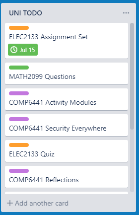

Organisation
Contents
TODO List
I have been using Trello as a todo list, to manage all of the university work that I need to complete.

Reflections on Time
In my reflection posts, I have regularly reflected and commented upon my progress, and of how I have been keeping up with my schedule.
Post Management
I have been writing my posts and publishing them online using the Hugo static site generator.
I have done this for four main reasons:
0) It looks better than Tumblr.
1) I have been doing all of my COMPXXXX notes at university like this.
2) It makes sharing notes to others simple.
3) It allows me to add tables into my posts, which Tumblr is unable to provide.
4) It allows me to add interactive elements (for example my password strength visualiser)
You can see my blog [here]
Blogging
I have been very active and regular with my posts. With at least two/three posts each week.
You can verify this through my Tumblr post archive page here
I currently have (loading) posts on Tumblr.
Catching up
Several occasions throughout the course I was not able to attend my lectures, and even some classes.
However I have been diligent in catching up with the classes that I have missed.